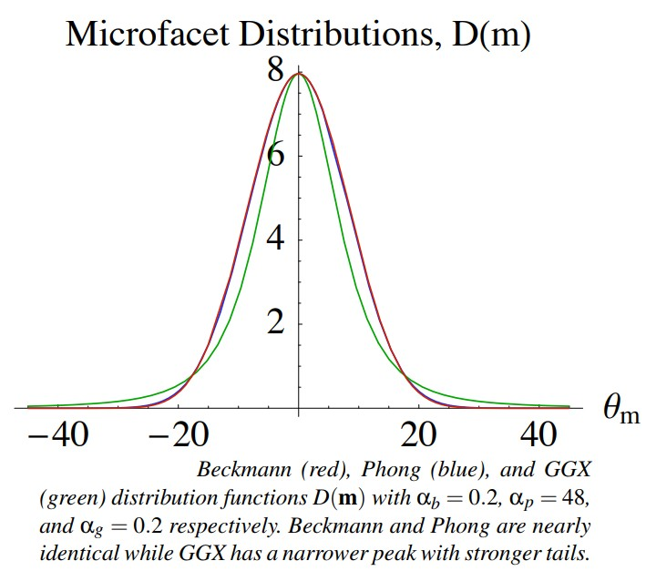
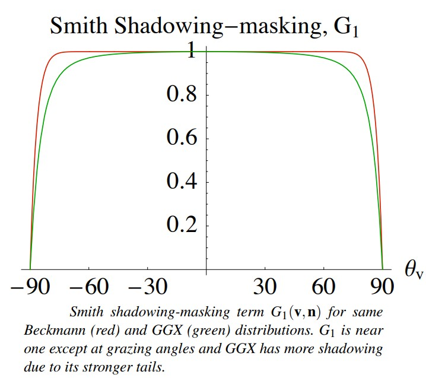
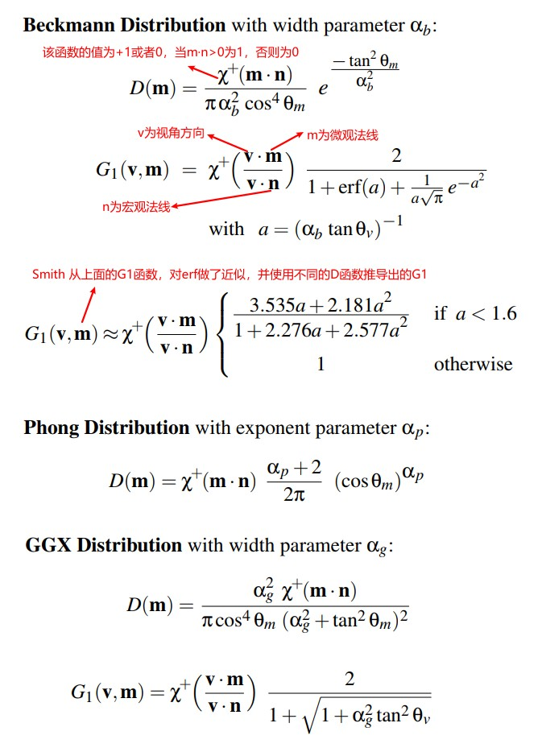

EGSR07-btdf
Table of Contents
Title note.
<!– more –>
EGSR07-btdf
Microfacet Distribution Function 微表面分布函数 D
微表面法线分布 D(m)描述了在微表面上，表面法线 m 的统计学分布。给定一个无穷小的立体角 \(dω_m\) ( \(dω_m\) 的中心为 m ) 以及对应的一个无穷小的宏观面积 dA, \(D(m)dω_mdA\) 为微表面法线在指定的立体角 \(dω_m\) 内的微表面的面积。所以 D(m)的单位为 1/sr (sr 为立体角的单位，steradian)。一个合理的微表面分布需要遵守下面约束：
- 微表面密度应该为正值：
\(0 <= D(m) <= ∞\) - 所有微表面面积和要比对应的宏观表面面积大：
\(1 <= \int D(m)dω_m\) - 有符号的微表面投影面积和对应的宏观表面面积相等：
\((v · n) = \int D(m)(v · m)dω_m\)
Tips: 上面的公式只有在包含 G1 函数的情况下才是准确的。
特殊情况下，当 v=n 时： \(1 = \int D(m)(n · m)dω_m\)
Phong Vs Beckmann Vs GGX
Beckmann 分布假设粗糙度为高斯分布。Phong 分布完全基于经验，但是适当选取宽度参数，Phong 分布和 Beckmann 分布会非常相似。为了更好的匹配测量到的传输数据，开发了 GGX 分布。

GGX 的峰值比较窄，尾部比较强。
Shadowing-Masking Function 几何项 G
bidirectional shadowing-masking function G(i, o, m)描述了微表面法线为 m，在 i 和 o 方向都可见的微表面的部分。除了在掠射角方向或表面非常粗糙的情况下，通常来说 G 对于 BSDF 的影响非常小。G函数需要遵守下面一些约束：
- G 函数的范围为[0,1]
0 ≤ G(i,o,m) ≤ 1 - G 函数具有对称性
G(i,o,m) = G(o,i,m) - 从宏观表面的正面看，微表面的背面永远不可见，从宏观表面的背面看，微表面的正面永远不可见。
G(i,o,m) = 0 (i·m)(i·n) ≤ 0 或 (o·m)(o·n) ≤ 0
G 函数依赖于微表面分布和微表面细节，无法精确表示 G 函数。通常，使用统计模型以及简化假设来近似推导 G 函数。
Beckmann Vs GGX
G 函数依赖于微表面分布函数 D 以及微表面的细节，因此精确地求解几乎是不可能的。Cook&Torrance 使用的 G 函数存在一阶导数不连续，以及其他一些在真实表面看不到的特性。Smith G 函数最初是为高斯分布的粗糙表面推导的，但是，已经被扩展，从而适用于任意分布的微表面，因此，对于一些特定情况(例如：Phong 分布)，最终的积分没简单封闭解(simple closed form solution)。
Smith G 使用两个单向的 shadowing 项 G1 来近似 G：
G(i,o,m) ≈ G1(i,m)G1(o,m)
G1 可以从微表面分布 D 推导出来。论文附录中有详细说明。

G1 函数基本为 1，除了在掠射角度的情况。由于 GGX 有更强的尾部，因此 GGX 的 G1 有更多的 Shadowing。
